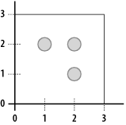

|
|
< Day Day Up > |
|
4.2 Index StructuresHaving covered some of the basic ideas behind indexing, let's turn to the various types (or structures) of indexes in MySQL. None of the index types are specific to MySQL. You'll find similar indexes in PostgreSQL, DB2, Oracle, etc. Rather than focus too much on the implementation details,[7] we'll look at the types of data or applications each type was designed to handle and find answers to questions like these: Which index types are the fastest? Most flexible? Use the most or least space?
If this were a general-purpose textbook for a computer science class, we might delve deeper into the specific data structures and algorithms that are employed under the hood. Instead, we'll try to limit our scope to the practical. If you're especially curious about the under-the-hood magic, there are plenty of excellent computer science books available on the topic. 4.2.1 B-Tree IndexesThe B-tree, or balanced tree, is the most common types of index. Virtually all database servers and embedded database libraries offer B-tree indexes, often as the default index type. They are usually the default because of their unique combination of flexibility, size, and overall good performance. As the name implies, a B-tree is a tree structure. The nodes are arranged in sorted order based on the key values. A B-tree is said to be balanced because it will never become lopsided as new nodes are added and removed. The main benefit of this balance is that the worst-case performance of a B-tree is always quite good. B-trees offer O(log n) performance for single-record lookups. Unlike binary trees, in which each node has at most two children, B-trees have many keys per node and don't grow "tall" or "deep" as quickly as a binary tree. B-tree indexes offer a lot of flexibility when you need to resolve queries. Range-base queries such as the following can be resolved very quickly: SELECT * FROM phone_book WHERE last_name BETWEEN 'Marten' and 'Mason' The server simply finds the first "Marten" record and the last "Mason" record. It then knows that everything in between are also matches. The same is true of virtually any query that involves understanding the range of values, including MIN( ) and MAX( ) and even an open-ended range query such as the following: SELECT COUNT(*) FROM phone_book WHERE last_name > 'Zawodny' MySQL will simply find the last Zawodny and count all the records beyond it in the index tree. 4.2.2 Hash IndexesThe second most popular indexes are hash-based. These hash indexes resemble a hash table rather than a tree. The structure is very flat compared to a tree. Rather than ordering index records based on a comparison of the key value with similar key values, hash indexes are based on the result of running each key through a hash function. The hash function's job is to generate a semiunique hash value (usually numeric) for any given key. That value is then used to determine which bucket to put the key in. Consider a common hashing function such as MD5( ). Given similar strings as input, it produces wildly different results: mysql> SELECT MD5('Smith');
+----------------------------------+
| MD5('Smith') |
+----------------------------------+
| e95f770ac4fb91ac2e4873e4b2dfc0e6 |
+----------------------------------+
1 row in set (0.46 sec)
mysql> SELECT MD5('Smitty');
+----------------------------------+
| MD5('Smitty') |
+----------------------------------+
| 6d6f09a116b2eded33b9c871e6797a47 |
+----------------------------------+
1 row in set (0.00 sec)
However, the MD5 algorithm produces 128-bit values (represented as base-64 by default), which means there are just over 3.4 x 1038 possible values. Because most computers don't have nearly enough disk space (let alone memory) to contain that many slots, hash tables are always governed by the available storage space. A common technique that reduces the possible key space of the hash table is to allocate a fixed number of buckets, often a relatively large prime number such as 35,149. You then divide the result of the hash function by the prime number and use the remainder to determine which bucket the value falls into. That's the theory. The implementation details, again, can be quite a bit more complex, and knowing them tends not to help much. The end result is that the hash index provides very fast lookups, generally O(1) unless you're dealing with a hash function that doesn't produce a good spread of values for your particular data. While hash-based indexes generally provide some of the fastest key lookups, they are also less flexible and less predictable than other indexes. They're less flexible because range-based queries can't use the index. Good hash functions generate very different values for similar values, so the server can't make any assumptions about the ordering of the data within the index structure. Records that are near each other in the hash table are rarely similar. Hash indexes are less predictable because the wrong combination of data and hash function can result in a hash table in which most of the records are clumped into just a few buckets. When that happens, performance suffers quite a bit. Rather than sifting through a relatively small list of keys that share the same hash value, the computer must examine a large list. Hash indexes work relatively well for most text and numeric data types. Because hash functions effectively reduce arbitrarily sized keys to a small hash value, they tend not to use as much space as many tree-based indexes. 4.2.3 R-Tree IndexesR-tree indexes are used for spatial or N-dimensional data. They are quite popular in mapping and geoscience applications but work equally well in other situations in which records are often queried based on two axes or dimensions: length and width, height and weight, etc. Having been added for Version 4.1, R-tree indexes are relatively new to MySQL. MySQL's implementation is based on the OpenGIS specifications, available online at http://www.opengis.org/. The spatial data support in other popular database servers is often based on the OpenGIS specifications, so the syntax should be familiar if you've similar products. Spatial indexes may be unfamiliar to many long-time MySQL users, so let's look at a simple example. We'll create a table to contain spatial data, add several points using X, Y coordinates, and ask MySQL which points fall within the bounds of some polygons. First, create the table with a small BLOB field to contain the spatial data: mysql> create table map_test
-> (
-> name varchar(100) not null primary key,
-> loc geometry,
-> spatial index(loc)
-> );
Query OK, 0 rows affected (0.00 sec)
Then add some points: mysql> insert into map_test values ('One Two', point(1,2));
Query OK, 1 row affected (0.00 sec)
mysql> insert into map_test values ('Two Two', point(2,2));
Query OK, 1 row affected (0.00 sec)
mysql> insert into map_test values ('Two One', point(2,1));
Query OK, 1 row affected (0.00 sec)
Now, ensure that it looks right in the table: mysql> select name, AsText(loc) from map_test; +---------+-------------+ | name | AsText(loc) | +---------+-------------+ | One Two | POINT(1 2) | | Two Two | POINT(2 2) | | Two One | POINT(2 1) | +---------+-------------+ 3 rows in set (0.00 sec) Finally, ask MySQL which points fall within a polygon: mysql> SELECT name FROM map_test WHERE
-> Contains(GeomFromText('POLYGON((0 0, 0 3, 3 3, 3 0, 0 0))'), loc);
+---------+
| name |
+---------+
| One Two |
| Two Two |
| Two One |
+---------+
3 rows in set (0.00 sec)
Figure 4-1 shows the points and polygon on a graph. Figure 4-1. 2-D points and a polygon that contains themMySQL indexes the various shapes that can be represented (points, lines, polygons) using the shape's minimum bounding rectangle (MBR). To do so, it computes the smallest rectangle you can draw that completely contains the shape. MySQL stores the coordinates of that rectangle and uses them when trying to find shapes in a given area. |
|
|
< Day Day Up > |
|